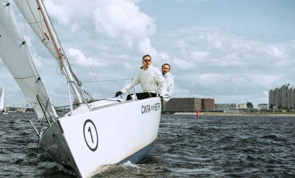

Открытие школы яхтинга “BigRace” в Калининграде
Профессиональное сообщество яхтсменов празднует открытие крупнейшей школы яхтинга в Калининграде. Кто в ней преподает, чему там можно научиться и на кого она рассчитана? Обо всем этом нам рассказал Михаил Чернов, известный спортсмен и владелец компании BigRace.
Надо ли напоминать, что Михаил – лауреат премии «Яхтсмен века», победитель открытого чемпионата Испании по океанским гонкам, держатель рекорда пересечения Атлантики «в четыре руки» на яхте Class 20. Исходя из всех заслуг спортсмена, можно смело заявить, что он настоящий профессионал своего дела. Ученикам его школы, как новичкам, так и бывалым яхтсменам, однозначно повезло. В школе Михаила будет преподавать он сам, а также лучшие спортсмены России и других стран: Испании, Франции, Черногории и др.
Михаил поставил цель создать не просто школу, а что-то большее:
«Я хотел, чтобы каждый ученик школы чувствовал себя частью большой и сильной команды. Это не просто слова, мы проделали огромную работу, чтобы это стало возможным: проводим специальные мероприятия, тренинги, собрания и многое другое.»
Михаил, расскажите, чем ваша школа отличается от других школ яхтинга в России?
Во-первых, это крупнейшая школа в Калининграде и одна из самых крупных в России. Школа оборудована самым современным и разнообразным оборудованием. А еще, у нас будут преподавать не только самые опытные яхтсмены России, но и спортсмены из других стран. Школа рассчитана не только на новичков, опытные яхтсмены тоже найдут здесь для себя много полезного, смогут повысить квалификацию.
Как пришла идея открыть свою школу?
Ко мне обращались любители парусного спорта, интересовались, где можно продолжить обучение, тренироваться, найти единомышленников. Я мог посоветовать лишь пару школ, и то в Сочи или Москве, в нашем городе такой не было. Мы объединились с Николаем Петровым, победителем Sochi Race Week 2019, и создали свою школу, которая отвечает всем потребностям новичков и профессионалов.
Расскажите, пожалуйста, подробнее о преподавателях
Одним из преподавателей буду я. В основном, я буду проводить отдельные мастер-классы для опытных моряков, но иногда буду проводить занятия и у начальных групп. Ведущим преподавателем начальных групп будет Никита Гуляев, очень опытный спортсмен, лауреат премии «Яхтсмен года 2020». Из приглашенных тренеров у нас Уильям Джонсон, Рэй Гилберт и Сэм Ли. Но, конечно, мы планируем как можно чаще приглашать и других яхтсменов.
Планируете ли вы какие-либо регаты уже в этом году?
Да, конечно! По вторникам проводим традиционный общий мастер-класс, в среду гонку среди любителей, четверги посвящаем матч-рейсу. В пятницу даем передышку, а в субботу ждем начинающих яхтсменов на совмещенное занятие – теория плюс практика на воде. По воскресеньям мы будем проводить Royal Sunday Race. Гонка стартует в четыре часа дня, чтобы люди могли отдохнуть, пообщаться и зарядиться энергией на всю оставшуюся неделю.
Ставить себе цели, двигаться к ним шаг за шагом, стремиться к знаниям. Самое важное – постоянно набираться опыта и знаний. И обязательно верить в себя!
совет всем любителям яхтинга от Коллина Трейси
Есть ли у вас в спорте пример для подражания?
Мне очень нравятся истории простых людей, которые смогли добиться успеха и признания. Особенно тех, кто не был рожден в спортивной или богатой семье, не имел возможности тренироваться на высоком уровне в детстве, кто сам создал себя. Коллин Трейси – мой кумир. С него и началась моя любовь к яхтингу. Однажды, мне даже довелось увидеться с ним лично. Тогда он дал мне совет и его слова я запомнил на всю жизнь. Это мой девиз, который теперь и я передаю своим ученикам.
Расскажите о яхтах вашей школы
В нашем флоте более 40 современных моделей яхт, таких как:
- Bavaria 47
- Bavaria 50
- Bavaria 46
- Bavaria 42
- Bavaria 40
- Jeanneau SO 35
- Jeanneau SO 36
Видно, что вы отлично подготовились! Желаем успеха и дальнейшего развития вашей школе!
Спасибо! Приходите к нам на обучение и мероприятия. Будем всех вас очень ждать!